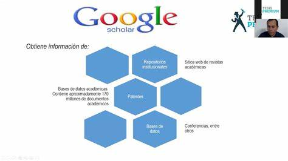
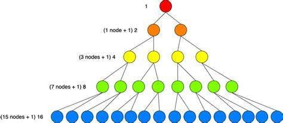

<!DOCTYPE html>
<html lang="en">
<head>
    <meta charset="UTF-8">
    <meta name="viewport" content="width=device-width, initial-scale=1.0">
    <title>Metodos_de_busqueda</title>
</head>
<body>
    
</body>
</html>
<div>
  <p class="h6">El método de búsqueda se refiere a técnicas utilizadas para encontrar información en conjuntos de datos, ya sea en bases de datos, en la web o en otros contextos. Se aplica en diversos campos, como la informática, la inteligencia artificial, la optimización y la gestión de información.</p>
  <p class="h6">Su propósito principal es localizar datos específicos de manera eficiente. Algunos ejemplos comunes incluyen algoritmos de búsqueda en bases de datos, motores de búsqueda en la web y técnicas de búsqueda en inteligencia artificial para encontrar soluciones óptimas en espacios de soluciones complejas.</p>
  <div class="w-25">
      
  </div>
  <p class="h6">Búsqueda en Bases de Datos: En el contexto de bases de datos, la búsqueda implica encontrar registros o conjuntos de datos que cumplan ciertos criterios. Se utilizan consultas para recuperar información específica de grandes conjuntos de datos.</p>
</div>
          <h6 class="card-subtitle mb-2 text-body-secondary">Imagenes</h6>
          <div id="carouselExampleControls" class="carousel slide" data-bs-ride="carousel">
            <div class="carousel-inner">
              <div class="carousel-item active" data-bs-interval="3000">
                
              </div>

              <div class="carousel-item" data-bs-interval="3000">
                
              </div>

              <div class="carousel-item" data-bs-interval="3000">
                
              </div>

            </div>
            <button class="carousel-control-prev" type="button" data-bs-target="#carouselExampleControls" data-bs-slide="prev">
              <span class="carousel-control-prev-icon" aria-hidden="true"></span>
              <span class="visually-hidden">anterior</span>
            </button>
            <button class="carousel-control-next" type="button" data-bs-target="#carouselExampleControls" data-bs-slide="next">
              <span class="carousel-control-next-icon" aria-hidden="true"></span>
              <span class="visually-hidden">siguiente</span>
            </button>
          </div>
          <p class="card-text">En conclusión, los métodos de búsqueda desempeñan un papel fundamental en la estructura y organización de bases de datos. Permiten recuperar datos de manera eficiente, facilitando el acceso a la información deseada. Algoritmos de búsqueda bien diseñados contribuyen a la optimización del rendimiento de las consultas, mejorando la eficacia y velocidad de recuperación de datos en grandes conjuntos de información. La elección adecuada de métodos de búsqueda es crucial para garantizar la eficiencia y la integridad de la base</p>
        </div>
      </div>
  </body>
</html>